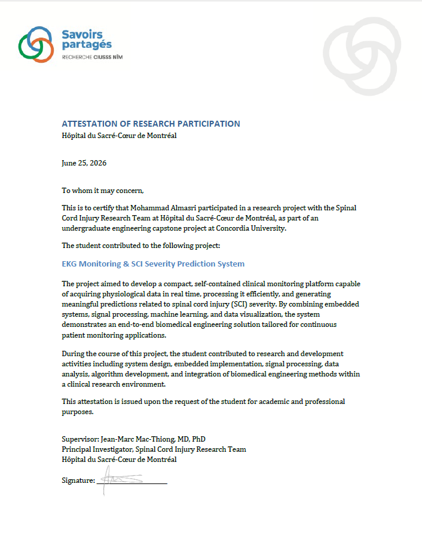

Featured Projects
ECG-Based Spinal Cord Injury Monitoring & Prediction System
Capstone & Clinical Research project at Hôpital du Sacré-Cœur-de-Montréal. Developed a multichannel ECG acquisition system using the ADS1293 custom PCB analog front end in KiCad, and Python machine learning models integration for SCI severity prediction. Machine contains RASP operating system with application to perform patient anaysis using model. The device is built in a secure compact 3D printed enclosure.
- Embedded System Design
- Raspberry Pi
- PCB Design
- Hardware Design
- KiCad
- Soldering
- Hardware Prototyting
- Python
- Machine Learning
- PyTorch
- NumPy
- OpenCV
- Pandas
- Matplotlib
- NeuroKit
- Object Oriented Programming
- Signal Processing
- Feature Extraction
- 3D printing
- AutoCAD

RTOS Vending Machine Controller
Implemented a real-time embedded application on the Explorer 16/32 board with a PIC32 PIM microcontroller. Utilized RTOS task architecture with mutex-protected getters/setters, ISR queues, and a serial technician maintenance terminal.
- RTOS architecture
- FreeRTOS
- Hardware Simulation
- Embedded Progamming C/C++
- PIC32 / Explorer 16/32
- LCD Display
- Interrupt Service Routine (ISR)
- Serial Communication
3-Axis CNC Laser Machine & Robotic Controller
Designed an XY gantry CNC laser cutting machine powered by a Raspberry Pi transmitting G-code to a standalone ATmega328P microcontroller running GRBL firmware with custom PCB design in Autodesk Eagle.
- Raspberry Pi
- ATmega328P / GRBL
- Autodesk Eagle
- PCB Design
Autonomous Hovercraft
Designed an Autonomous Hovercraft using Arduino Uno with infrared and Ultrasonic sensors to adjust trajectory in real-time.
- Arduino Uno
- Real-time Ajustment
- Infrared Sensors
- Ultrasonic Sensors
- Real-time Navigation
BeagleBone Black Computer Vision Robot
Programmed a robotic vehicle using a BeagleBone Black single-board computer, leveraging Python, OpenCV, and NumPy for real-time visual tracking of an orange target.
- BeagleBone Black
- Python
- OpenCV
- NumPy
- Real-time Tracking
- Computer Vision
- Image Processing
Professional Experience & Research
Hôpital du Sacré-Cœur-de-Montréal – Spinal Cord Injury Research Centre
Engineering Intern / Research Assistant (June 2025 – Present) | Supervisor: Dr. Jean-Marc Mac-Thiong, MD, PhD
Contributed to clinical research developing a real-time clinical monitoring platform combining embedded systems, signal processing, and machine learning to predict spinal cord injury severity from ECG signals.
Saveurs du P'tit Rang
Computer Technology Intern (April – May 2021)
Designed automated prototype monitoring systems, evaluated technical solutions, and presented fully functional hardware prototypes to stakeholders.
About Me
Computer Engineering graduate from Concordia University with extensive hands-on experience in low-level embedded firmware, RTOS multi-tasking, PCB design, FPGA development, and biomedical signal processing. Dedicated to building robust, real-time embedded hardware solutions.
Education:
• B.Eng. in Computer Engineering – Concordia University (2022–2026)
• DEC in Computer Engineering Technology – Vanier College (2018–2021)